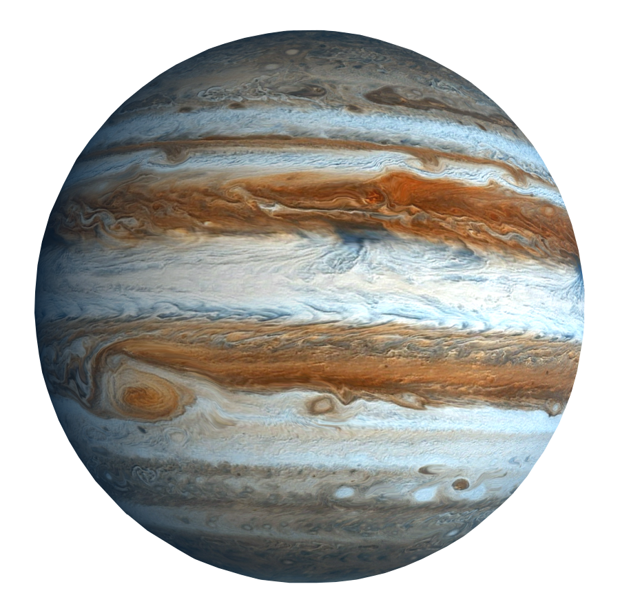

Jowisz

-
Jowisz jest prawdopodobnie najstarszą planetą Układu Słonecznego.
Planety Układu Słonecznego zaczęły formować się około 4,5 miliarda lat
temu czyli około 100 milionów lat po uformowaniu się Słońca.
-
Dzień na Jowiszu jest najkrótszy ze wszystkich planet Układu
Słonecznego. Planeta obraca się bardzo szybko wokół własnej osi i
dlatego doba na Jowiszu trwa 9 godzin i 55 minut.
-
Jowisz okrąża Słońce w ciągu prawie 12 lat. Patrząc na niebo łatwo jest
zauważyć, że Jowisz bardzo długo pozostaje w obrębie jednej konstelacji.
-
Jowisz nie posiada powierzchni. Planeta składa się głównie z gazów i
cieczy. Gdybyśmy chcieli udać się jakimkolwiek statkiem kosmicznym w
głąb Jowisza zostałby on jednak zmiażdżony przez panujące tam surowe
warunki i ogromne ciśnienie.
-
Pole magnetyczne Jowisza jest 14-krotnie silniejsze od ziemskiego.
Pomijając plamy słoneczne pole magnetyczne Jowisza jest najsilniejszym
naturalnym polem magnetycznym w Układzie Słonecznym.
Powrót na stronę główną